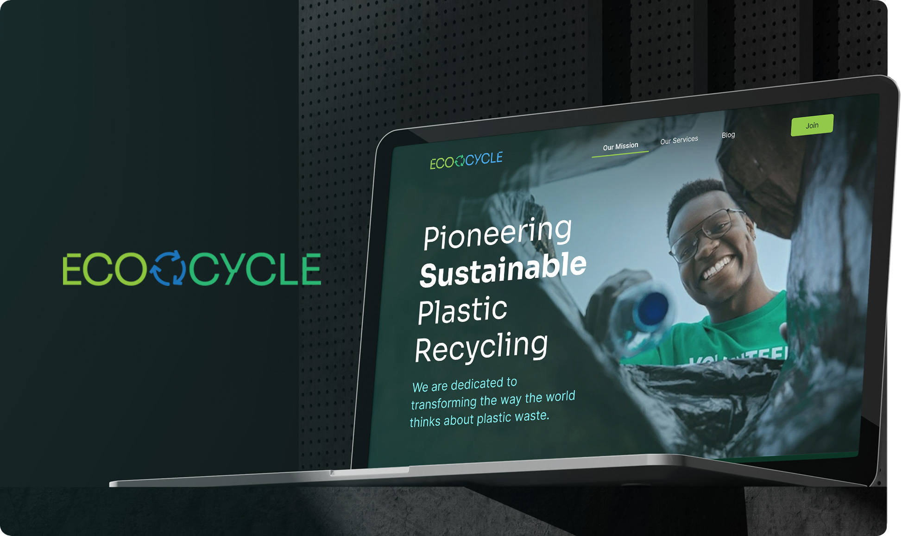

PROJECT :
Ecocycle: Pioneering
sustainable plastic recycling.
Web design for a Sustainability and environmental services company.

EcoCycle, it's a company dedicated to transforming the way the world thinks about plastic waste. It's mission is to reduce the environmental impact of plastic by promoting sustainable recycling practices that conserve resources, reduce pollution, and contribute to a cleaner, greener planet.
Challenge.
EcoCycle needed a digital platform capable of communicating its environmental mission while presenting its recycling services in a clear and engaging way. The challenge was to design a modern interface that balances visual storytelling with structured information, helping users understand the impact of sustainable plastic recycling.
Wireframing stage.
The wireframes prioritized simplicity and user flow, ensuring key information like services and calls to action were easily accessible. They established the framework for an intuitive, structured layout.

Typography.
The typography combines the S ora typeface for headings and titles, giving the site a modern and bold look, with Inter used for both subheadings and body text. This pairing ensures clarity, readability, and a clean, professional appearance across all devices, while reinforcing EcoCycle’s innovative and eco-conscious identity.

Colors.
The color palette features green for sustainability and blue for environmental focus. Neutral tones balance the design, enhancing the brand's eco-friendly identity while ensuring a clean, approachable look.

High Fidelity Prototypes.
The color palette features green for sustainability and blue for environmental focus. Neutral tones balance the design, enhancing the brand's eco-friendly identity while ensuring a clean, approachable look.


This project allowed me to explore how through visual design can create clear and meaningful digital experiences. It reinforced the importance of strong typography, structured layouts, and thoughtful visual hierarchy when communicating complex topics such as sustainability.
Thanks for taking the time to explore this project.